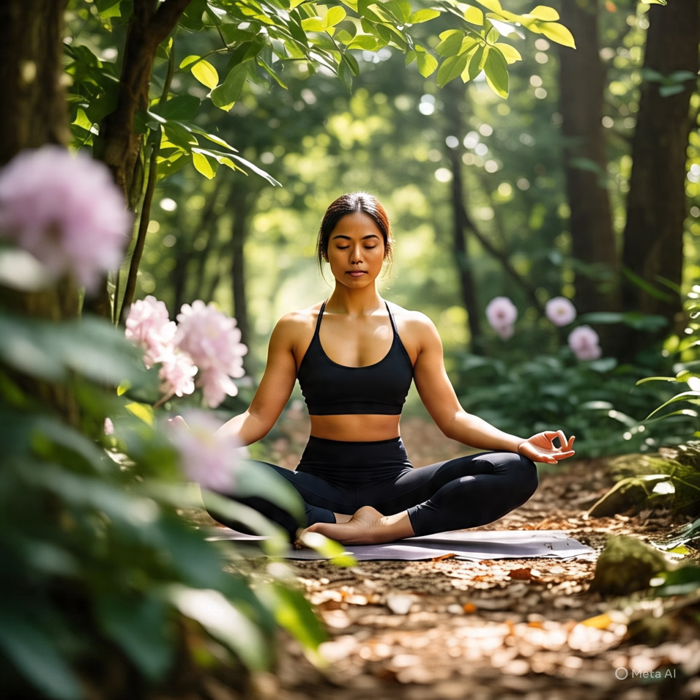
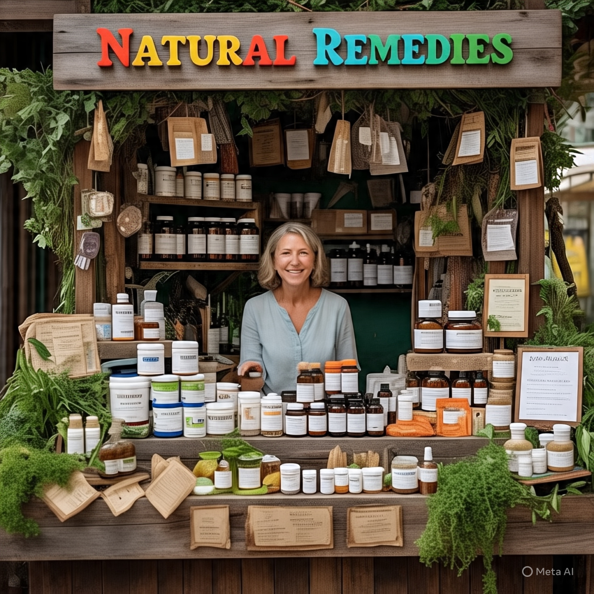

Introdução
Sabemos que a relação entre saúde e bem-estar pode variar significativamente entre o campo e a cidade devido às diferenças no estilo de vida, ambiente e acesso a recursos. Trazendo diversas vantagens e desvantagens como:
Vantagens encontradas na cidade:
- Ar puro e natureza: O campo geralmente oferece ar mais limpo e acesso direto à natureza, o que pode contribuir para uma melhor saúde respiratória e mental.
- Alimentação mais saudável: A proximidade com a produção de alimentos orgânicos e naturais pode incentivar uma dieta mais saudável.
- Menos poluição sonora: O ambiente mais tranquilo pode reduzir o estresse e melhorar a qualidade do sono.
Desafios enfrentados no campo:
- Acesso limitado a serviços de saúde: Em áreas rurais, pode haver menos hospitais, clínicas e especialistas, tornando o acesso a cuidados médicos mais difícil.
- Isolamento social: A vida no campo pode ser mais isolada, o que pode afetar a saúde mental e o bem-estar social.
- Menos opções de lazer: As atividades de lazer podem ser limitadas em comparação com as cidades.
Vantagens encontradas na cidade:
ortunidades de lazer: As cidades oferecem uma ampla gama de atividades culturais, esportivas e de entretenimento.
- Conexões sociais: A vida urbana proporciona mais oportunidades para interações sociais e construção de redes de apoio.
Desafios enfrentados no campo:
- Poluição e estresse: A poluição do ar, sonora e visual pode afetar a saúde física e mental.
- Estilo de vida sedentário: O ambiente urbano pode incentivar um estilo de vida mais sedentário, especialmente com o uso excessivo de transporte motorizado.
- Custo de vida: O custo de vida nas cidades pode ser mais alto, o que pode afetar a capacidade de acessar alimentos saudáveis e moradia adequada.
E aonde o Vida Rosa entra nisso?
Pensando nisso desenvolvemos um site onde poderemos te ajudar a unir as melhores vantagens de cada um de forma pratica para aqueles que querem reencontrar sua autoestima e bem estar em meio as rotinas corridas. Imagine um lugar onde o ar puro do campo se encontra com a energia vibrante da cidade, criando um equilíbrio perfeito para nutrir seu corpo e alma. No Vida Rosa, acreditamos que a saúde e o bem-estar vão além da ausência de doenças – são sobre viver plenamente, em harmonia com a natureza e consigo mesmo.No Vida Rosa, acreditamos que cada pequeno passo conta. Seja qual for seu objetivo – melhorar a saúde física, encontrar equilíbrio emocional ou simplesmente se sentir melhor –, estamos aqui para apoiá-lo. Explore nosso site, participe de nossa comunidade e comece a construir o caminho para uma vida mais saudável e feliz. Vamos caminhar juntos rumo ao bem-estar!
Dicas

.
Comunidade

.
Produtos naturais
No Vida Rosa, estamos comprometidos em ajudá-lo a encontrar os melhores produtos naturais para melhorar sua saúde e bem-estar. Aqui estão algumas recomendações de produtos que podem beneficiar sua saúde física e emocional: Suplementos Naturais 1. Ômega 3: O óleo de peixe rico em ômega 3 é conhecido por suas propriedades anti-inflamatórias e benefícios para a saúde cardiovascular. Você pode encontrar ômega 3 de alta qualidade em: - Loja online da Natura - Farmácias de manipulação como a Extrafarma 2. Probióticos: Os probióticos são bactérias benéficas que podem ajudar a melhorar a saúde digestiva e fortalecer o sistema imunológico. Você pode encontrar probióticos em: - Loja online da Probiotico - Supermercados como o Pão de Açúcar 3. Vitaminas Naturais: As vitaminas naturais podem ajudar a preencher lacunas nutricionais e promover a saúde geral. Você pode encontrar vitaminas naturais em: - Loja online da Vitamina Mais - Farmácias como a Drogasil Produtos de Cuidados Pessoais 1. Óleos Essenciais: Os óleos essenciais podem ser usados para promover relaxamento, reduzir estresse e melhorar a saúde da pele. Você pode encontrar óleos essenciais em: - Loja online da Aromatherapy - Lojas de produtos naturais como a Mundo Verde 2. Cremes e Loções Naturais: Os cremes e loções naturais podem ajudar a hidratar e proteger a pele. Você pode encontrar cremes e loções naturais em: - Loja online da Natura - Lojas de produtos naturais como a Erva Mate Alimentos Naturais 1. Chás Herbais: Os chás herbais podem ser usados para promover relaxamento, reduzir estresse e melhorar a saúde digestiva. Você pode encontrar chás herbais em: - Loja online da Chá Brasil - Supermercados como o Carrefour 2. Alimentos Orgânicos: Os alimentos orgânicos são produzidos sem o uso de pesticidas e fertilizantes químicos, o que pode ser benéfico para a saúde e o meio ambiente. Você pode encontrar alimentos orgânicos em: - Feiras de produtos orgânicos - Supermercados como o Pão de Açúcar Dicas para Comprar Produtos Naturais 1. Verifique a rotulagem: Certifique-se de que os produtos sejam rotulados como "naturais" ou "orgânicos" e contenham ingredientes de alta qualidade. 2. Pesquise sobre a marca: Verifique a reputação da marca e leia as avaliações de outros clientes. 3. Consulte um profissional: Se você tiver alguma dúvida ou preocupação, consulte um profissional de saúde antes de usar qualquer produto natural.
Caso precise de mais informaçoes consulte nossa comunidade.